1. Levelling to a grid#
[1]:
# %load_ext autoreload
# %autoreload 2
import boule
import cmocean
import numpy as np
import pandas as pd
import polartoolkit as ptk
import verde as vd
import airbornegeo
/home/sungw937/airbornegeo/.pixi/envs/default/lib/python3.14/site-packages/tqdm/auto.py:21: TqdmWarning: IProgress not found. Please update jupyter and ipywidgets. See https://ipywidgets.readthedocs.io/en/stable/user_install.html
from .autonotebook import tqdm as notebook_tqdm
1.1. Load survey data#
This is a subset of the BAS AGAP survey over Antarctica’s Gamburtsev Subglacial Mountains. The file is download and subset in the notebook AGAP_gravity_survey, and the BAS processing steps are repeated in the notebook processing_AGAP_gravity_survey.
[10]:
data_df = pd.read_csv("data/AGAP_gravity_survey_processed.csv")
data_df = data_df[
[
"easting",
"northing",
"height",
"line",
"unixtime",
"distance_along_line",
"grav_disturbance_filt",
]
]
data_df.head()
[10]:
| easting | northing | height | line | unixtime | distance_along_line | grav_disturbance_filt | |
|---|---|---|---|---|---|---|---|
| 0 | 1.000024e+06 | 226237.330771 | 4156.1 | 1 | 1.229507e+09 | 0.000000 | 49.38 |
| 1 | 1.000083e+06 | 226246.631269 | 4156.0 | 1 | 1.229507e+09 | 59.842447 | 49.45 |
| 2 | 1.000142e+06 | 226255.809132 | 4156.1 | 1 | 1.229507e+09 | 119.693401 | 49.52 |
| 3 | 1.000201e+06 | 226264.969079 | 4156.4 | 1 | 1.229507e+09 | 179.545645 | 49.58 |
| 4 | 1.000260e+06 | 226274.156809 | 4156.6 | 1 | 1.229507e+09 | 239.285174 | 49.65 |
[12]:
# plot the data
max_abs = vd.maxabs(data_df.grav_disturbance_filt, percentile=95)
ax = data_df.plot.scatter(
"easting",
"northing",
c="grav_disturbance_filt",
s=0.1,
cmap=cmocean.cm.balance,
vmin=-max_abs,
vmax=max_abs,
)
ax.set_aspect("equal")
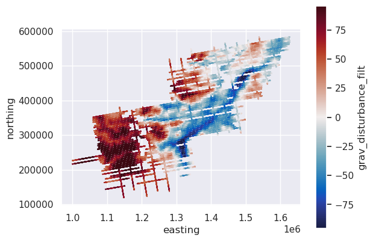
1.2. Get a grid of gravity disturbance at 10km#
[13]:
# Download satellite gravity data from EIGEN-6C4 model
region = vd.get_region((data_df.easting, data_df.northing))
eigen = ptk.fetch.gravity(
version="eigen",
spacing=5e3,
region=region,
epsg="3031",
)
eigen_df = vd.grid_to_table(eigen)
eigen_df = eigen_df.rename(columns={"x": "easting", "y": "northing"})
# reproject from EPSG 3031 to lat lon
eigen_df["lon"], eigen_df["lat"] = airbornegeo.reproject(
eigen_df.easting,
eigen_df.northing,
input_crs="EPSG:3031",
output_crs="EPSG:4326",
)
# calculated normal gravity at all EIGEN observation locations
eigen_df["normal_gravity"] = boule.WGS84.normal_gravity(
(None, eigen_df.lat, eigen_df.ellipsoidal_height),
)
# calculate gravity disturbance
eigen_df["disturbance"] = eigen_df.gravity - eigen_df.normal_gravity
# convert to a dataset
eigen_ds = eigen_df.set_index(["northing", "easting"]).to_xarray()
eigen_ds
[13]:
<xarray.Dataset> Size: 479kB
Dimensions: (northing: 94, easting: 127)
Coordinates:
* northing (northing) float64 752B 1.2e+05 1.25e+05 ... 5.85e+05
* easting (easting) float64 1kB 1e+06 1.005e+06 ... 1.63e+06
Data variables:
ellipsoidal_height (northing, easting) float32 48kB 1e+04 1e+04 ... 1e+04
gravity (northing, easting) float32 48kB 9.8e+05 ... 9.797e+05
lon (northing, easting) float64 96kB 83.16 83.19 ... 70.26
lat (northing, easting) float64 96kB -80.75 -80.7 ... -74.16
normal_gravity (northing, easting) float64 96kB 9.8e+05 ... 9.798e+05
disturbance (northing, easting) float64 96kB 38.05 38.12 ... -20.55[14]:
eigen_ds.disturbance.plot()
[14]:
<matplotlib.collections.QuadMesh at 0x7f37d1b1ce10>
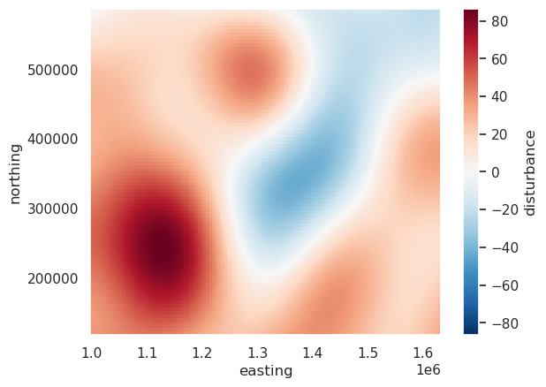
1.3. Upward continue survey data to same height as gravity grid#
In order to accurately compare the survey gravity data to the grid, the gravity data should be upward continued so it’s at the same altitude.
[15]:
# plot the data
ax = data_df.plot.scatter(
"easting",
"northing",
c="height",
s=0.1,
)
ax.set_aspect("equal")
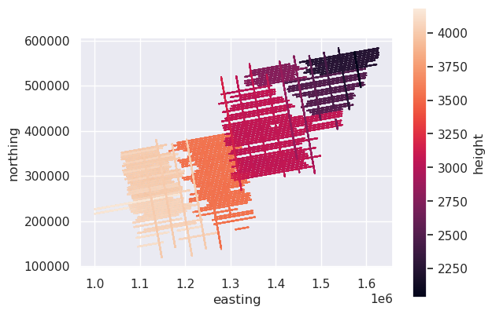
[16]:
blocked_survey = airbornegeo.block_reduce(
data_df,
np.median,
spacing=1000,
reduce_by="distance_along_line",
groupby_column="line",
)
blocked_survey
Segments: 100%|██████████| 100/100 [00:12<00:00, 7.99it/s]
[16]:
| distance_along_line | easting | northing | height | unixtime | grav_disturbance_filt | line | |
|---|---|---|---|---|---|---|---|
| 0 | 477.521406 | 1.000496e+06 | 226310.158049 | 4159.10 | 1.229507e+09 | 49.890 | 1 |
| 1 | 1477.462561 | 1.001484e+06 | 226460.426302 | 4160.30 | 1.229507e+09 | 50.730 | 1 |
| 2 | 2504.019094 | 1.002497e+06 | 226630.494762 | 4156.00 | 1.229507e+09 | 51.090 | 1 |
| 3 | 3518.522095 | 1.003499e+06 | 226786.791629 | 4159.60 | 1.229507e+09 | 51.070 | 1 |
| 4 | 4528.427996 | 1.004498e+06 | 226936.380167 | 4165.70 | 1.229507e+09 | 51.430 | 1 |
| ... | ... | ... | ... | ... | ... | ... | ... |
| 21443 | 74604.147937 | 1.587227e+06 | 500746.382318 | 2091.50 | 1.230382e+09 | -14.050 | 100 |
| 21444 | 75624.848269 | 1.587399e+06 | 499740.258279 | 2105.95 | 1.230382e+09 | -16.245 | 100 |
| 21445 | 76638.943754 | 1.587565e+06 | 498740.092633 | 2110.60 | 1.230382e+09 | -17.580 | 100 |
| 21446 | 77637.520664 | 1.587737e+06 | 497756.392340 | 2113.00 | 1.230382e+09 | -17.820 | 100 |
| 21447 | 78639.391988 | 1.587918e+06 | 496771.090597 | 2115.30 | 1.230382e+09 | -17.180 | 100 |
21448 rows × 7 columns
[17]:
# fit a set of equivalent sources to each line individually
eqs = airbornegeo.eq_sources_1d(
blocked_survey,
data_column="grav_disturbance_filt",
depth="default",
damping=None,
block_size=1000, # for speed, block reduce sources
groupby_column="line",
)
eqs
Groups: 100%|██████████| 100/100 [00:14<00:00, 7.12it/s]
[17]:
{1: EquivalentSources(block_size=1000),
2: EquivalentSources(block_size=1000),
3: EquivalentSources(block_size=1000),
4: EquivalentSources(block_size=1000),
5: EquivalentSources(block_size=1000),
6: EquivalentSources(block_size=1000),
7: EquivalentSources(block_size=1000),
8: EquivalentSources(block_size=1000),
9: EquivalentSources(block_size=1000),
10: EquivalentSources(block_size=1000),
11: EquivalentSources(block_size=1000),
12: EquivalentSources(block_size=1000),
13: EquivalentSources(block_size=1000),
14: EquivalentSources(block_size=1000),
15: EquivalentSources(block_size=1000),
16: EquivalentSources(block_size=1000),
17: EquivalentSources(block_size=1000),
18: EquivalentSources(block_size=1000),
19: EquivalentSources(block_size=1000),
20: EquivalentSources(block_size=1000),
21: EquivalentSources(block_size=1000),
22: EquivalentSources(block_size=1000),
23: EquivalentSources(block_size=1000),
24: EquivalentSources(block_size=1000),
25: EquivalentSources(block_size=1000),
26: EquivalentSources(block_size=1000),
27: EquivalentSources(block_size=1000),
28: EquivalentSources(block_size=1000),
29: EquivalentSources(block_size=1000),
30: EquivalentSources(block_size=1000),
31: EquivalentSources(block_size=1000),
32: EquivalentSources(block_size=1000),
33: EquivalentSources(block_size=1000),
34: EquivalentSources(block_size=1000),
35: EquivalentSources(block_size=1000),
36: EquivalentSources(block_size=1000),
37: EquivalentSources(block_size=1000),
38: EquivalentSources(block_size=1000),
39: EquivalentSources(block_size=1000),
40: EquivalentSources(block_size=1000),
41: EquivalentSources(block_size=1000),
42: EquivalentSources(block_size=1000),
43: EquivalentSources(block_size=1000),
44: EquivalentSources(block_size=1000),
45: EquivalentSources(block_size=1000),
46: EquivalentSources(block_size=1000),
47: EquivalentSources(block_size=1000),
48: EquivalentSources(block_size=1000),
49: EquivalentSources(block_size=1000),
50: EquivalentSources(block_size=1000),
51: EquivalentSources(block_size=1000),
52: EquivalentSources(block_size=1000),
53: EquivalentSources(block_size=1000),
54: EquivalentSources(block_size=1000),
55: EquivalentSources(block_size=1000),
56: EquivalentSources(block_size=1000),
57: EquivalentSources(block_size=1000),
58: EquivalentSources(block_size=1000),
59: EquivalentSources(block_size=1000),
60: EquivalentSources(block_size=1000),
61: EquivalentSources(block_size=1000),
62: EquivalentSources(block_size=1000),
63: EquivalentSources(block_size=1000),
64: EquivalentSources(block_size=1000),
65: EquivalentSources(block_size=1000),
66: EquivalentSources(block_size=1000),
67: EquivalentSources(block_size=1000),
68: EquivalentSources(block_size=1000),
69: EquivalentSources(block_size=1000),
70: EquivalentSources(block_size=1000),
71: EquivalentSources(block_size=1000),
72: EquivalentSources(block_size=1000),
73: EquivalentSources(block_size=1000),
74: EquivalentSources(block_size=1000),
75: EquivalentSources(block_size=1000),
76: EquivalentSources(block_size=1000),
77: EquivalentSources(block_size=1000),
78: EquivalentSources(block_size=1000),
79: EquivalentSources(block_size=1000),
80: EquivalentSources(block_size=1000),
81: EquivalentSources(block_size=1000),
82: EquivalentSources(block_size=1000),
83: EquivalentSources(block_size=1000),
84: EquivalentSources(block_size=1000),
85: EquivalentSources(block_size=1000),
86: EquivalentSources(block_size=1000),
87: EquivalentSources(block_size=1000),
88: EquivalentSources(block_size=1000),
89: EquivalentSources(block_size=1000),
90: EquivalentSources(block_size=1000),
91: EquivalentSources(block_size=1000),
92: EquivalentSources(block_size=1000),
93: EquivalentSources(block_size=1000),
94: EquivalentSources(block_size=1000),
95: EquivalentSources(block_size=1000),
96: EquivalentSources(block_size=1000),
97: EquivalentSources(block_size=1000),
98: EquivalentSources(block_size=1000),
99: EquivalentSources(block_size=1000),
100: EquivalentSources(block_size=1000)}
[18]:
# upward continue each line to 10 km
blocked_survey["upward_continued_10km"] = airbornegeo.upward_continue_by_line(
blocked_survey,
eqs,
height=10e3,
)
blocked_survey.head()
Groups: 100%|██████████| 100/100 [00:00<00:00, 158.69it/s]
[18]:
| distance_along_line | easting | northing | height | unixtime | grav_disturbance_filt | line | upward_continued_10km | |
|---|---|---|---|---|---|---|---|---|
| 0 | 477.521406 | 1.000496e+06 | 226310.158049 | 4159.1 | 1.229507e+09 | 49.89 | 1 | 40.232278 |
| 1 | 1477.462561 | 1.001484e+06 | 226460.426302 | 4160.3 | 1.229507e+09 | 50.73 | 1 | 40.972657 |
| 2 | 2504.019094 | 1.002497e+06 | 226630.494762 | 4156.0 | 1.229507e+09 | 51.09 | 1 | 41.713109 |
| 3 | 3518.522095 | 1.003499e+06 | 226786.791629 | 4159.6 | 1.229507e+09 | 51.07 | 1 | 42.431563 |
| 4 | 4528.427996 | 1.004498e+06 | 226936.380167 | 4165.7 | 1.229507e+09 | 51.43 | 1 | 43.141623 |
[20]:
# plot the upward continued data
max_abs = vd.maxabs(blocked_survey.upward_continued_10km, percentile=95)
ax = blocked_survey.plot.scatter(
"easting",
"northing",
c="upward_continued_10km",
s=0.1,
cmap=cmocean.cm.balance,
vmin=-max_abs,
vmax=max_abs,
)
ax.set_aspect("equal")
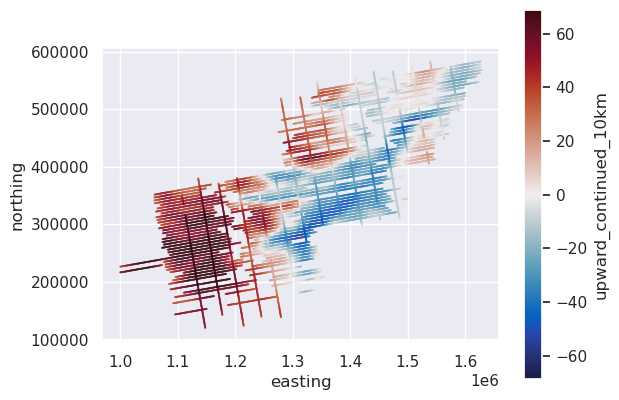
1.3.1. Sample the satellite gravity grid values into the dataframe#
[21]:
# sample grid along lines
blocked_survey["sampled_grid_values"] = airbornegeo.sample_grid(
blocked_survey,
eigen_ds.disturbance,
coord_names=("easting", "northing"),
)
blocked_survey.head()
grdtrack [WARNING]: Some input points were outside the grid domain(s).
[21]:
| distance_along_line | easting | northing | height | unixtime | grav_disturbance_filt | line | upward_continued_10km | sampled_grid_values | |
|---|---|---|---|---|---|---|---|---|---|
| 0 | 477.521406 | 1.000496e+06 | 226310.158049 | 4159.1 | 1.229507e+09 | 49.89 | 1 | 40.232278 | 48.675663 |
| 1 | 1477.462561 | 1.001484e+06 | 226460.426302 | 4160.3 | 1.229507e+09 | 50.73 | 1 | 40.972657 | 48.836891 |
| 2 | 2504.019094 | 1.002497e+06 | 226630.494762 | 4156.0 | 1.229507e+09 | 51.09 | 1 | 41.713109 | 49.005095 |
| 3 | 3518.522095 | 1.003499e+06 | 226786.791629 | 4159.6 | 1.229507e+09 | 51.07 | 1 | 42.431563 | 49.172386 |
| 4 | 4528.427996 | 1.004498e+06 | 226936.380167 | 4165.7 | 1.229507e+09 | 51.43 | 1 | 43.141623 | 49.342525 |
[23]:
# plot the sampled grid values
max_abs = vd.maxabs(blocked_survey.sampled_grid_values, percentile=95)
ax = blocked_survey.plot.scatter(
"easting",
"northing",
c="sampled_grid_values",
s=0.1,
cmap=cmocean.cm.balance,
vmin=-max_abs,
vmax=max_abs,
)
ax.set_aspect("equal")
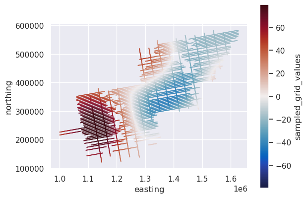
[24]:
# plot the difference
blocked_survey["data_to_grid_diff"] = (
blocked_survey.upward_continued_10km - blocked_survey.sampled_grid_values
)
max_abs = vd.maxabs(blocked_survey.data_to_grid_diff, percentile=95)
ax = blocked_survey.plot.scatter(
"easting",
"northing",
c="data_to_grid_diff",
s=0.1,
cmap=cmocean.cm.balance,
vmin=-max_abs,
vmax=max_abs,
)
ax.set_aspect("equal")
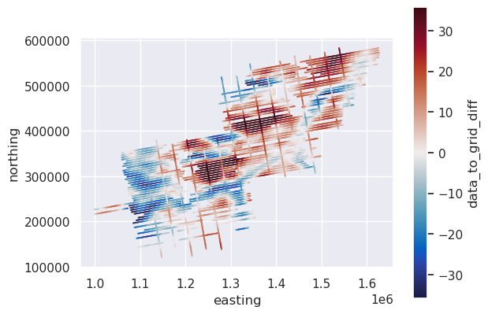
1.4. Level the lines to the grid#
[25]:
blocked_survey["levelled_trend_0"] = airbornegeo.level_to_grid(
blocked_survey,
degree=0, # DC shift
data_column="upward_continued_10km",
grid_column="sampled_grid_values",
groupby_column="line",
)
blocked_survey["levelled_trend_1"] = airbornegeo.level_to_grid(
blocked_survey,
degree=1, # DC shift + tilt
data_column="upward_continued_10km",
grid_column="sampled_grid_values",
groupby_column="line",
)
blocked_survey.head()
[25]:
| distance_along_line | easting | northing | height | unixtime | grav_disturbance_filt | line | upward_continued_10km | sampled_grid_values | data_to_grid_diff | levelled_trend_0 | levelled_trend_1 | |
|---|---|---|---|---|---|---|---|---|---|---|---|---|
| 0 | 477.521406 | 1.000496e+06 | 226310.158049 | 4159.1 | 1.229507e+09 | 49.89 | 1 | 40.232278 | 48.675663 | -8.443385 | 42.596650 | 39.485331 |
| 1 | 1477.462561 | 1.001484e+06 | 226460.426302 | 4160.3 | 1.229507e+09 | 50.73 | 1 | 40.972657 | 48.836891 | -7.864234 | 43.337029 | 40.252951 |
| 2 | 2504.019094 | 1.002497e+06 | 226630.494762 | 4156.0 | 1.229507e+09 | 51.09 | 1 | 41.713109 | 49.005095 | -7.291987 | 44.077481 | 41.021368 |
| 3 | 3518.522095 | 1.003499e+06 | 226786.791629 | 4159.6 | 1.229507e+09 | 51.07 | 1 | 42.431563 | 49.172386 | -6.740823 | 44.795935 | 41.767460 |
| 4 | 4528.427996 | 1.004498e+06 | 226936.380167 | 4165.7 | 1.229507e+09 | 51.43 | 1 | 43.141623 | 49.342525 | -6.200902 | 45.505995 | 42.505032 |
[26]:
# plot the levelling correction
blocked_survey["levelling_correction_trend_0"] = (
blocked_survey.upward_continued_10km - blocked_survey.levelled_trend_0
)
max_abs = vd.maxabs(blocked_survey.levelling_correction_trend_0, percentile=95)
ax = blocked_survey.plot.scatter(
"easting",
"northing",
c="levelling_correction_trend_0",
s=0.1,
cmap=cmocean.cm.balance,
vmin=-max_abs,
vmax=max_abs,
)
ax.set_aspect("equal")
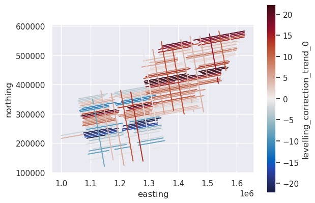
[27]:
# plot the levelling correction
blocked_survey["levelling_correction_trend_1"] = (
blocked_survey.upward_continued_10km - blocked_survey.levelled_trend_1
)
max_abs = vd.maxabs(blocked_survey.levelling_correction_trend_1, percentile=95)
ax = blocked_survey.plot.scatter(
"easting",
"northing",
c="levelling_correction_trend_1",
s=0.1,
cmap=cmocean.cm.balance,
vmin=-max_abs,
vmax=max_abs,
)
ax.set_aspect("equal")
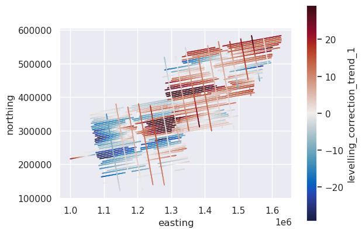
[ ]:
# look at just 1 of the leveled lines
line_df = blocked_survey[blocked_survey.line == 2]
ax = line_df.plot.line(
"distance_along_line",
"sampled_grid_values",
style="bp",
ms=2,
)
ax = line_df.plot.line(
"distance_along_line",
"upward_continued_10km",
style="rp",
ms=2,
ax=ax,
)
ax = line_df.plot.line(
"distance_along_line",
"levelled_trend_0",
style="gp",
ms=2,
ax=ax,
)
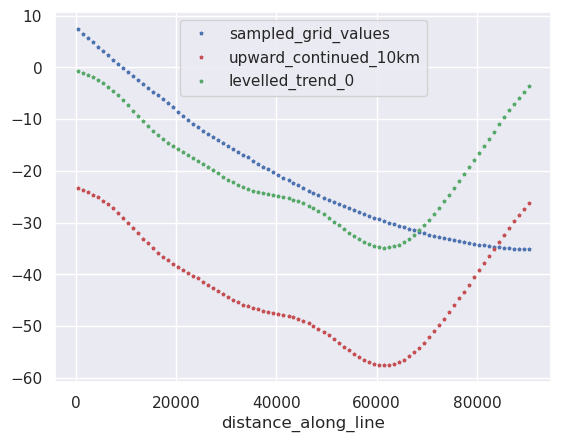
[31]:
# look at just 1 of the leveled lines
line_df = blocked_survey[blocked_survey.line == 2]
ax = line_df.plot.line(
"distance_along_line",
"sampled_grid_values",
style="bp",
ms=2,
)
ax = line_df.plot.line(
"distance_along_line",
"upward_continued_10km",
style="rp",
ms=2,
ax=ax,
)
ax = line_df.plot.line(
"distance_along_line",
"levelled_trend_1",
style="gp",
ms=2,
ax=ax,
)
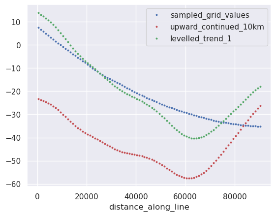
1.5. Level the entire survey to the grid#
By not supplying the groupby_column argument, instead of levelling each line in 1D, we can level the entire survey in 2D.
[32]:
blocked_survey["levelled_trend_1"] = airbornegeo.level_to_grid(
blocked_survey,
degree=1,
data_column="upward_continued_10km",
grid_column="sampled_grid_values",
)
blocked_survey["levelled_trend_2"] = airbornegeo.level_to_grid(
blocked_survey,
degree=2,
data_column="upward_continued_10km",
grid_column="sampled_grid_values",
)
blocked_survey.head()
[32]:
| distance_along_line | easting | northing | height | unixtime | grav_disturbance_filt | line | upward_continued_10km | sampled_grid_values | data_to_grid_diff | levelled_trend_0 | levelled_trend_1 | levelling_correction_trend_0 | levelling_correction_trend_1 | levelled_trend_2 | |
|---|---|---|---|---|---|---|---|---|---|---|---|---|---|---|---|
| 0 | 477.521406 | 1.000496e+06 | 226310.158049 | 4159.1 | 1.229507e+09 | 49.89 | 1 | 40.232278 | 48.675663 | -8.443385 | 42.596650 | 48.042236 | -2.364372 | 0.746947 | 67.534014 |
| 1 | 1477.462561 | 1.001484e+06 | 226460.426302 | 4160.3 | 1.229507e+09 | 50.73 | 1 | 40.972657 | 48.836891 | -7.864234 | 43.337029 | 48.749985 | -2.364372 | 0.719706 | 68.053783 |
| 2 | 2504.019094 | 1.002497e+06 | 226630.494762 | 4156.0 | 1.229507e+09 | 51.09 | 1 | 41.713109 | 49.005095 | -7.291987 | 44.077481 | 49.456755 | -2.364372 | 0.691741 | 68.570103 |
| 3 | 3518.522095 | 1.003499e+06 | 226786.791629 | 4159.6 | 1.229507e+09 | 51.07 | 1 | 42.431563 | 49.172386 | -6.740823 | 44.795935 | 50.142059 | -2.364372 | 0.664103 | 69.066650 |
| 4 | 4528.427996 | 1.004498e+06 | 226936.380167 | 4165.7 | 1.229507e+09 | 51.43 | 1 | 43.141623 | 49.342525 | -6.200902 | 45.505995 | 50.819190 | -2.364372 | 0.636591 | 69.555997 |
[33]:
# plot the levelling correction
blocked_survey["levelling_correction_trend_1"] = (
blocked_survey.upward_continued_10km - blocked_survey.levelled_trend_1
)
max_abs = vd.maxabs(blocked_survey.levelling_correction_trend_1, percentile=95)
ax = blocked_survey.plot.scatter(
"easting",
"northing",
c="levelling_correction_trend_1",
s=0.1,
cmap=cmocean.cm.balance,
vmin=-max_abs,
vmax=max_abs,
)
ax.set_aspect("equal")
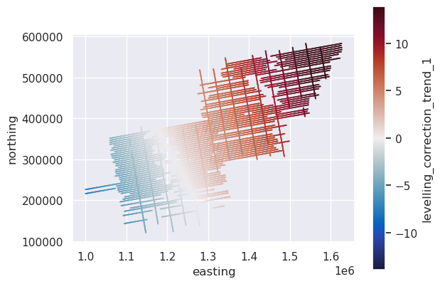
[34]:
# plot the levelling correction
blocked_survey["levelling_correction_trend_2"] = (
blocked_survey.upward_continued_10km - blocked_survey.levelled_trend_2
)
max_abs = vd.maxabs(blocked_survey.levelling_correction_trend_2, percentile=95)
ax = blocked_survey.plot.scatter(
"easting",
"northing",
c="levelling_correction_trend_2",
s=0.1,
cmap=cmocean.cm.balance,
vmin=-max_abs,
vmax=max_abs,
)
ax.set_aspect("equal")
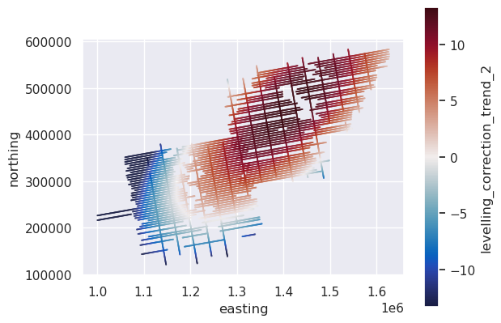